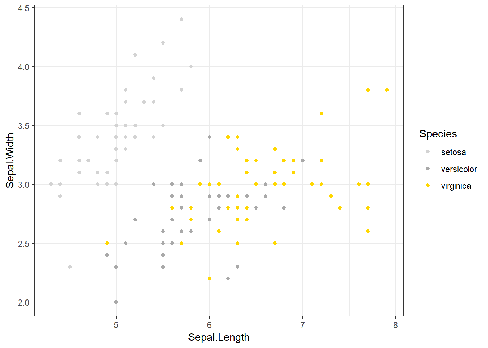

Simple Graphs
UQ SLC Digital Team
2 Dezember 2018
1 Introduction
This section discusses how data can be visualized and what needs to be kept in mind when visualizing data, e.g. axes labeling, and it exemplifies different types of graphs (scatter plot, line graphs, bar-charts, histograms, pie charts, box-plot). In addition, the pros and cons of different types of graphs are discussed and the steps and procedures to set up graphs are shown so that you can re-create the graphs at home. The practical part also focuses on potential probelms you may encounter when setting up a graph. The graphs are plotted in R as it is a very flexible tool for visualization and offers more control over the distinct layers of plots.
There is a multitude of different ways to visualize data and thus we focus only on the most common types of visualization in this chapter. Each type of plot is created R as it is extremely flexible and powerful when it comes to graphics.
2 Graphics with R
Before turning to the practical part, a few words on different frameworks fro creating graphics in R are in order. There are three basic frameworks in which to create graphics in R. The basic framework, the lattice framework, and the ggplot framework. The basic framework is the oldest and is included in the base-package that is automatically activated when entering R.
2.1 The basic environment
The idea behind the basic environment is that the creation of graphics is seen in analogy to a painter who paints on an empty canvass. Each line or element is added to the graph consequetively which oftentimes leads to code that is very comprehensible but aso very long.
2.2 The lattice environment
The lattice enviroment was a follow-up to the base-package and it complemented it insofar as it made it much easier to display various variables and variable levels simultaneously. The philosophy of the lattice-package is quite different from the philosophy in the base-package: Whereas everything had to be specified in base, the graphs cerated in the latticeenvironment require only very little code but are therefore very easily cerated when one is satisfied with the design but vey labor intensive when it comes to customizeing graphs. Howvere, the latticepackage is very handy when summarizing relationships between multiple variable and variable levels.
2.3 The ggplot environment
The ggplot environment was written by Hadley Wickham and it combines the positive aspects of both the base and the lattice package. It was first publicized in the gplotand ggplot1 packages but the latter was soon repackaged and improved in the now most widely used package for data visualization: the ggplot2package. Theggplot`-environemt implements a philosophy of graphic design described in builds on The Grammar of Graphics by Leland Wilkinson ((Wilkinson 2006)).
The philosophy of ggplot2is to consider graphics as consisting out of basic elements (called aesthetics and they include, for instance, the data set to be plotted and the axes) and layers that overlayed onto the aestethics. The idea of the ggplot2package can eb summarized as taking “care of many of the fiddly details that make plotting a hassle (like drawing legends) as well as providing a powerful model of graphics that makes it easy to produce complex multi-layered graphics.”
In the following, the graphs are initially created in the baseenvironment while lattice and ggplot graphs, if approprite, are shown afer the basic display.
2.4 Data
Before turning to the graphs themselves, we will briefly look at the structures of the data sets to what we are working with. In this chapter, we will not use language data but inbuild data sets that are provided by R and already loaded when entering R. The data sets are called iris and mtcars. The iris data set contains information about “measurements in centimeters of the variables sepal length and width and petal length and width, respectively, for 50 flowers from each of 3 species of iris. The species are Iris setosa, versicolor, and virginica” (cf. (Becker, Chambers, and Wilks 1988); (Anderson 1935); (Fisher 1936)). In a first step, we attach the iris data so that we only need to write the variable names without having to repeat the name of the data set. Then, we inspect the structure of the iris data using the str() command.
# attach iris
attach(iris)
# inspect iris data
str(iris)## 'data.frame': 150 obs. of 5 variables:
## $ Sepal.Length: num 5.1 4.9 4.7 4.6 5 5.4 4.6 5 4.4 4.9 ...
## $ Sepal.Width : num 3.5 3 3.2 3.1 3.6 3.9 3.4 3.4 2.9 3.1 ...
## $ Petal.Length: num 1.4 1.4 1.3 1.5 1.4 1.7 1.4 1.5 1.4 1.5 ...
## $ Petal.Width : num 0.2 0.2 0.2 0.2 0.2 0.4 0.3 0.2 0.2 0.1 ...
## $ Species : Factor w/ 3 levels "setosa","versicolor",..: 1 1 1 1 1 1 1 1 1 1 ...The iris data contains four numeric variables which provide the values for sepal length and width as well as petal length and width. In addition, the data contains a factor which denotes the flower species. We will now turn to creating the graphs.
3 Scatter plot
The first, and simplest graph, is a so-called “scatterplot”. Scatterplots are used when the graph is set up to display the relationship between two numeric variables. We will start off with creating a scatter plot in the base environment, then in the lattice package and finally in the ggplot environment.
3.1 Scatter plot in base
The most fundamental function to creta eplots in the base environment is to use the general plot function. Here, we use that function to cerate a simple scatter plot.

Let us go over the command. The first part of the call is plot which is the function for plotting data in the base package. In the round brackets are the arguments in which we specify what the plot should look like. The “Sepal.Length ~ Sepal.Width” part tells R which variables should be displayed and the “type =”p“” part tells R which type of plot we want (“p” stands for points, “l”, for lines, “b” for both lines and points). The part “data = iris” tells R which data set to take the data from, and “ylab =”Sepal Length“” and “xlab =”Sepal Width“” informs Rabout the axes labels. The part “main =”plot type ‘p’ (points)" informs R about what we want as the main title of the plot.
In a next step, we will add a regression line to the scatterplot (in the first case a linear and in the second case a smoothed regression line).

3.2 Scatter plot in lattice
In order to be able to plot data using the lattice package, we need to install and activate it first.
## Warning: package 'lattice' was built under R version 3.5.2After the lattice package is loaded, we can cerate a first simple scatter plot using the xyplot function form the lattice package.

Since the lattice package was cerated to plot multiple relationships with a single call, we will now make use of that feature and plot multiple relationships at once. In addition, we will add a grid to the plot to improve comparability of adat points within the graph.

The only new code in the chunk above is the “| Species” part. This part means that the relationship between Sepal.Length and Sepal.Width should be displayed by Species. So the |-symbol can be translated into “by”. The splitting of the plot into different oanels for Species is then done automatically. Next, we will use the ggplot2-package to create a scatter plot
3.3 Scatter plot in ggplot2
A with the lattice-package, we need to install and activate the ggplot2 before we are able to plot data using the ggplot2 package.
Next, we create a very basic scatterplot in ggplot2. The advantages of using ggplot2 will be shown below.

Let’s go over the code above. The function call for plotting in ggplot2 is simply ggplot. This function takes the data set as its first argument and then requires aesthetics. The aesthetics are defined within the ggplot function as thearguments of aes. The aes function takes the axes as the arguments (in the current case). Then, we need to define the type of plot that we want. As we want a scatter plot with points, we add the geom_point() function without any arguments (as we do not want to specify the size, color, and shape of the points just yet).
The advantage of ggplot2 is that is really easy to modify the plot by adding new layers and to change the basic outllok bymodifying the theme which is waht we will do in the code below.


Next, we will create a line chart. Line charts are used when you have a series of points (e.g. mean values) for categorical variables.
Simple Bar Plot
Word clouds visualize word frequencies of either single corpora or they visualize different corpora. Although word clouds are not really used in academic linguistics, they are a neat way to display the themes - which may be thought of as the semantic content - of corpora. To exemplify how to use word clouds, we are going to have a look at the election programs (Wahlkampfprogramme) of German political parties for the Bundestag elections 2013.
Prepare data by removing all lists from the current work space and installing packages we need or which may be usefulRead in data
At first I thought that word clouds are simply a fancy but not very helpful way to inspect language data but I have to admit that word clouds really surprised me as they do appear to possess potential to offer an idea of what groups of people are talking about.
The comparative word cloud shows that the stresses concepts like “wettbewerb”, “freiheit”, “chancen”, “liberal” thereby stressing their liberal outlook (they didn’t make it and didn’t deserve it by the way - just my opinion). support every nonsense as they are “für” everything and relied more on emphasizing “frauen”, “zukunft”, and “teilhabe” which is in line with their feel-good philosophy. rallied on about what we has to be done (“müssen”), and used words like “sozial”, “beschäftigten”, and “öffentlich” a lot showing their emphasis on economic issues. The social democrats () addressed topics like “kommunen”, “arbeit”, “gesellschaft”, “bildung”, and “gerechtigkeit” - so they essentially used their typical buzz words (just sayin’). Finally, the mentioned “ländlich”, “wohlstand”, “unser*, “and”weiterhin" to suggest that they will just continue with whatever nothing that hve been doing over the past years.
In conclusion, I honestly didn’t think that I would get meaningful results but the comparative word cloud does a rather good job at that. So that was it on word clouds in R.
Anderson, Edgar. 1935. “The Irises of the Gaspe Peninsula.” Bulletin of the American Iris Society 59: 2–5.
Becker, Richard A., John M. Chambers, and Allen R. Wilks. 1988. The New S Language. Wadsworth & Brooks/Cole.
Fisher, R. A. 1936. “The Use of Multiple Measurements in Taxonomic Problems.” Annals of Eugenics 7 (2): 179–88.
Wilkinson, Leland. 2006. The Grammar of Graphics. Canada: Springer Science & Business Media.